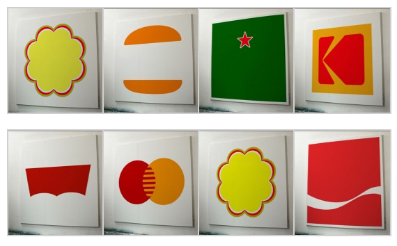

Wed, 20 Apr 2011 03:10:41 · design · logos · art · paintings
you took my name a series of paintings by

You Took My Name
A series of paintings by Dorothy that strips famous logo back to its basic form. Can you guess what they are? See augmented version here.